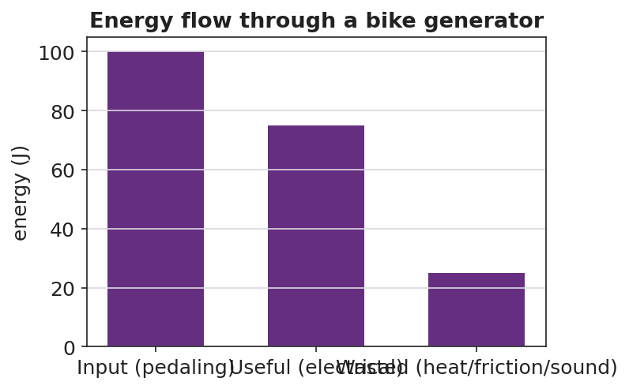

Unit: Work, Energy & Power — Lesson 06: Energy in Systems (Wheels to Watts)
Phenomenon
When a car with regenerative braking slows down, it captures some of its motion as electricity instead of throwing it all away as heat in the brakes. A bike generator does the same: your pedaling lights a bulb — but the generator gets warm. Not all of the energy makes it through. "Wheels to Watts."
Driving Question
When a device converts one form of energy into another, how much comes out useful, where does the rest go, and how can we make it better?
Notice & Wonder
Watch the bike generator light the bulb — and feel how warm it gets. Write what you notice and what you wonder.
Initial Model
Draw your Wheels-to-Watts device (generator → load). Label the energy at each stage: "Energy goes IN as ____, comes OUT useful as ____, and is WASTED as ____."
Investigate
Slide the energy input and the device's efficiency. The input bar splits into a useful output bar and a wasted (heat) bar. A better design shifts energy from wasted to useful — but never reaches 100%.
Useful out = 300 J · Wasted = 100 J · efficiency = useful ÷ input = 75%
Make It Make Sense
- A motor uses 200 J of electrical energy and delivers 150 J of useful work. What is its efficiency? Show useful ÷ input.
- An incandescent bulb is about 5% efficient; an LED is about 40% efficient. For every 100 J supplied, how much useful light energy does each give? Where does the rest go?
- Why can no real device be 100% efficient?
Stuck? Sentence frame
"The device put out ___ J useful from ___ J in, so efficiency = ___ ÷ ___ = ___%; the rest became ___."
Key Vocabulary (max 3)
- efficiency — the fraction of input energy that comes out as useful output; efficiency = useful ÷ input
- energy transfer — the movement or conversion of energy from one place or form to another
- system — the set of connected components being analyzed; energy is conserved across the whole system
Revise Your Model
Using a 100 J input, chart how much is useful vs. wasted for your refined device. Did your refinement move energy from the wasted bar into the useful bar?

Return to the Phenomenon
In one sentence, explain why regenerative braking is better than normal braking in energy terms — and why it still can't recover 100% of the car's energy. Use efficiency and energy transfer.
Exit Ticket + Closing Reflection
- A bike generator takes in 400 J of pedaling energy and delivers 300 J of useful electrical energy.
(a) Calculate the efficiency. Show useful ÷ input.
(b) Where did the other 100 J go? Did it disappear?
(c) Propose ONE refinement that would raise the efficiency, and explain why it works. - Reflection: What is one thing that surprised you today? Who helped you make sense of something?